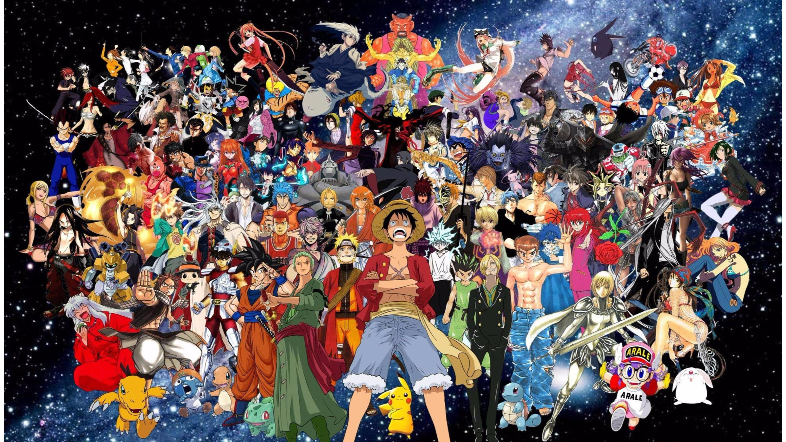

ta charset="UTF-8">
Anime

What is anime
Anime (Japanese: アニメ; IPA: [aꜜɲime] ⓘ;[a] derived from a shortening of the English word animation) is animation originating from Japan. Outside Japan and in English, anime refers specifically to animation produced in Japan.[1] However, anime, in Japan and in Japanese, describes all animated works, regardless of style or origin. Many works of animation with a similar style to Japanese animation are also produced outside Japan. Video games sometimes also feature themes and art styles that may be labelled as
The earliest commercial Japanese animation dates to 1917. A characteristic art style emerged in the 1960s with the works of cartoonist Osamu Tezuka and spread in the following decades, developing a large domestic audience. Anime is distributed theatrically, through television broadcasts, directly to home media, and over the Internet. In addition to original works, anime are often adaptations of Japanese comics (manga), light novels, or video games. It is classified into numerous genres targeting various broad and niche audiences
What anime teach us
Anime teaches us that no matter how steep the odds, resilience, hard work, and the bonds of friendship can help you overcome any obstacle. Through iconic underdog journeys, it shows that your starting point doesn’t determine your future, and encourages you to fiercely chase your dreams without ever giving
- Perseverance and Self-Belief
Stories like Naruto and My Hero Academia center on underdogs (like Naruto being an outcast or Deku being born quirkless) who prove that sheer determination and effort can triumph over natural, inherited talent. It’s a powerful reminder that consistent, daily progress eventually yields massive results.
- The Power of Community
In shows like One Piece, you learn that no one succeeds entirely on their own. Surrounding yourself with reliable friends, supporting each other's dreams, and fighting for your chosen family are highlighted as some of life's greatest strengths.